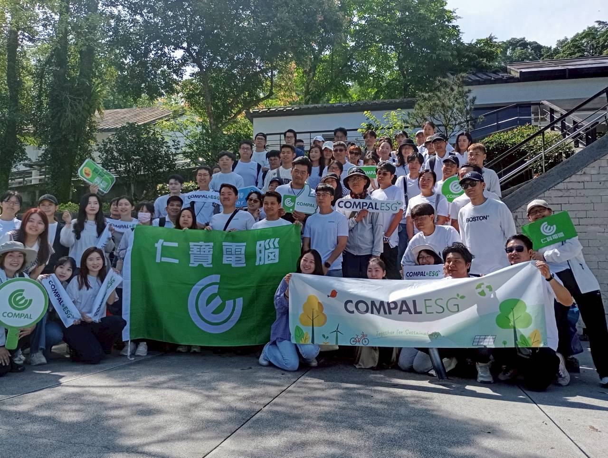

公司安排了採茶志工活動，正好遇上「世界生物多樣性日」，就跟著公司來當一日採茶阿桑。
坪林古橋旁的白鷺鷥公寓
我們走過坪林古橋（又稱坪林尾橋），認識了坪林水源保護區。
橋邊水岸第一排的「白鷺鷥公寓」特別吸睛，這裡住著三大家族：小白鷺、黃頭白鷺、夜鷺（又稱暗光鳥）。鷺鷺們的日常相當寫實：有大鳥餵食小鳥、耐心孵蛋的溫馨場景，也有為了搶巢位而打架的熱鬧場面。明明旁邊也有別棵榕樹，大家卻偏偏喜歡擠在一起，吵吵鬧鬧，形成有趣又獨特的自然生態景象，是個可以近距離觀察鳥類活動的絕佳地點。
有機茶園裡的蟲蟲生態課
在茶園裡，我們親身體驗有機茶農的辛苦。受到地球暖化影響，難得的一心二葉好茶葉常被椿象啃食，導致茶樹乾枯或長出褐色病斑。但這一天的重點不在採茶，而是透過有機茶園的生態觀察，認識十多種小昆蟲與樹蛙，我們甚至做了蟲蟲攝影比賽！這些小生命與茶樹共生，讓我們更深刻理解「有機」背後的生物多樣性價值。但是，我們這些都市弱雞，淺淺體驗一下採茶姑娘的工作就好，還是回到冷氣房聽師傅們說明茶葉製作的過程、親手試試「炒菁」和「揉茶」，最後再來一場品茶配爆米花的輕鬆時光比較適合。
清甜回甘的坪林包種茶
喝到冷泡的坪林包種茶，清甜回甘。或許是剛曬完太陽太熱的關係，覺得特別好喝、特別沁涼。另一款特別的 GABA TEA（佳葉龍茶），是厭氧發酵的特殊茶，不屬於六大茶類，風味獨特，令人印象深刻。更有趣的是，它是一款號稱可以在晚上喝的茶品，因為它富含 γ- 胺基丁酸（GABA），能幫助放鬆、穩定情緒，並在一定程度上抵消咖啡因的刺激作用，因此喝了它也不怕晚上睡不著。
茶葉小知識：六大茶類怎麼分？
科普一下六大茶類，是依照茶葉發酵程度與製程工藝區分為：綠茶、白茶、黃茶、青茶（烏龍茶）、紅茶、黑茶。而且同一種茶樹葉片也會因加工方式不同而製成多種口感與風味迥異的茶品，例如金萱烏龍、金萱紅茶或是金萱東方美人茶。
這次活動不僅讓我們了解茶農的辛苦，也在世界生物多樣性日，親眼見證了茶園裡的生態共生。非常推薦愛喝茶的三五好友一起來體驗，好茶、好風景、好心情一次滿足。
 |